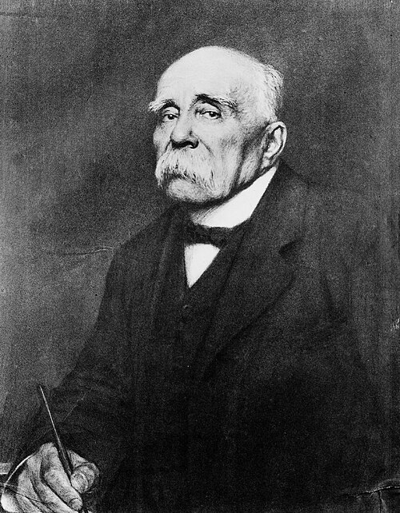
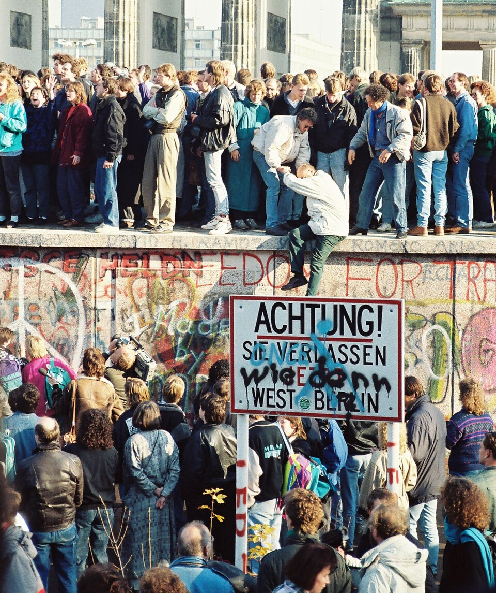

3 minutes
Une question rapide
Un personnage, une date, une photographie ou un mot.
Un site à utiliser en-dehors des cours de Madame Lanquetin pour améliorer ses connaissances.
Choisis une période, une activité très courte ou un parcours plus complet. Tu peux t’arrêter à tout moment : la progression peut être conservée uniquement sur cet appareil, sans compte ni transmission.


Une seule petite activité suffit pour avancer.
Un personnage, une date, une photographie ou un mot.
Analyser une une, décoder une affiche ou remettre des événements en ordre.
Personnages, frise, vocabulaire, médias, récapitulatif et défi final.
La même organisation dans chaque chapitre pour retrouver rapidement ses repères.
Les résumés et les mots peuvent être lus par le navigateur.
Les activités sont courtes, sans chronomètre imposé et peuvent être recommencées.
La progression reste sur l’appareil et peut être exportée dans un fichier.